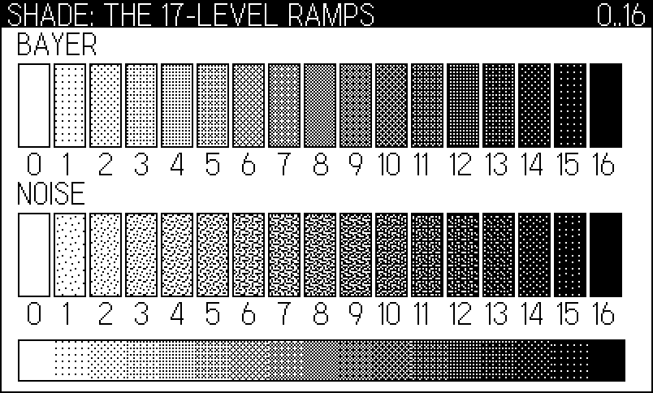
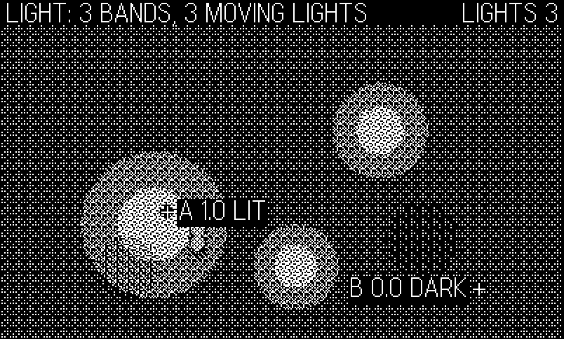
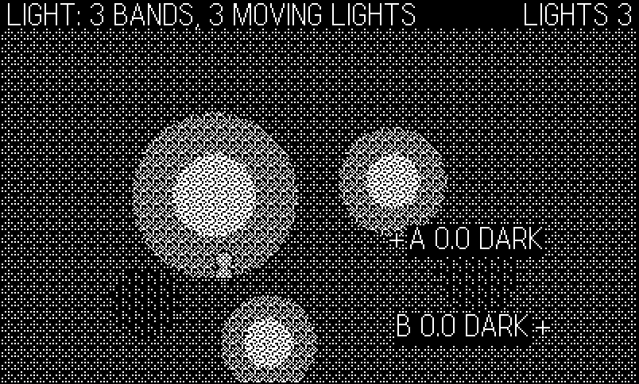
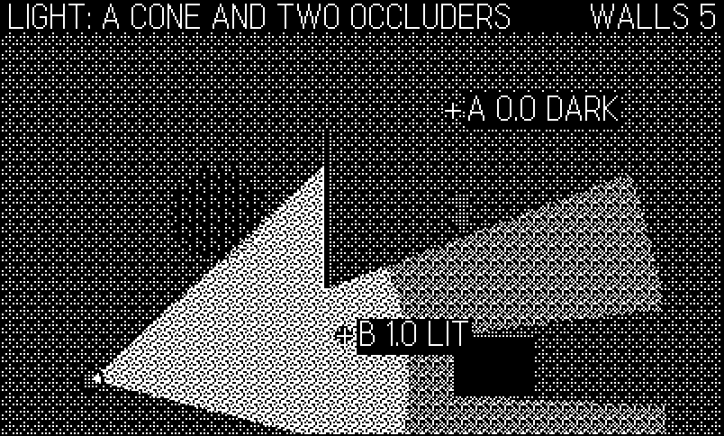
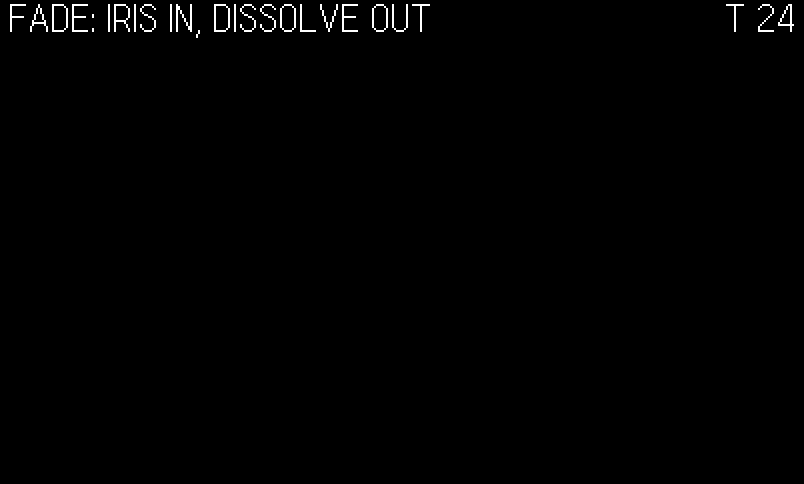
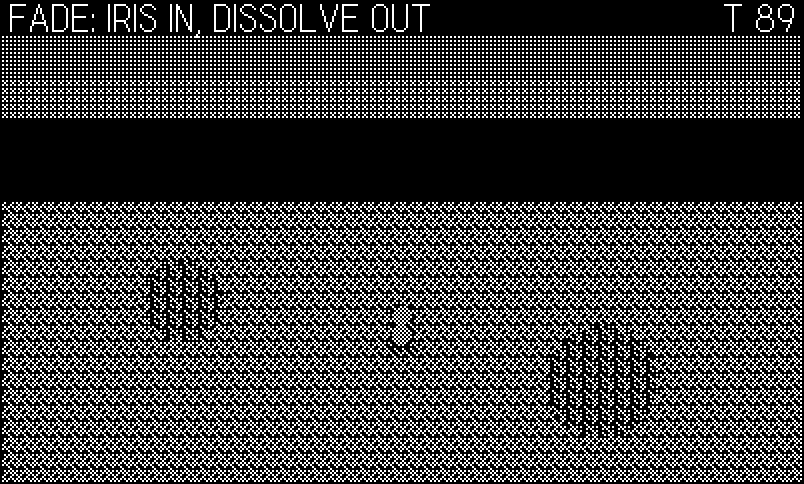
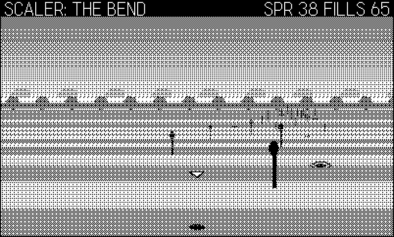

24 Inside Dither: A Shade Engine
The fourth engine in the catalog nearly wasn’t one. For most of its life the dither/ package was a single racer sitting on an 81-line core — a smoke harness and a delayed-call scheduler, nothing more — and its own overhaul commit opens with the diagnosis: “The package had no identity.” Phosphor had a thesis (Chapter 21: everything is lines), Tiles had one (Chapter 22: the character grid is the single source of truth), Voxel had one (Chapter 23: a game must use height and volume to earn the room). Dither had a folder. The fix was not more code first; it was a sentence first, written into DESIGN.md before any module existed:
Every engine in this fleet owns a rendering idea: phosphor owns lines, tiles owns the grid, voxel owns volume. Dither owns shade — the illusion of grayscale on a 1-bit screen, promoted from an art trick to a game mechanic. —
dither/DESIGN.md
Chapter 4 taught the art trick: dither patterns as a gray palette, the ladder figure, the setDitherPattern transparency trap. This chapter is about the promotion. An engine that owns shade cannot stop at “here is how to fill a rect with gray” — it has to make grays a resource (ramps as first-class objects), light a query (“is this point lit?” answered by the same math that darkens the pixels), and distance a tone (parallax fade, depth haze, shadows that anchor). And like Voxel’s height rule, the thesis doubles as an admission test:
A game earns Dither the way a game earns voxel’s height rule: it must USE shade — hide something in darkness, reveal something with light, or make distance readable by tone. A game that only wants sprites on a screen belongs in classics. —
dither/DESIGN.md
What came out of the overhaul was a core of twelve files and 1,246 lines — shade, light, cast, fade, para, scaler, plus the cabinet (kit, dsnd, dmusic) and the original thin trio — and three proof games: Sprint, the pre-existing racer retrofitted with day/dusk/night headlight racing; Glim, a firefly-keeper built so that darkness is mechanics, not paint; and Skimmer, a Space Harrier-lineage dragonfly on the super-scaler. A second wave has since doubled it, and its commit message states the gap in two sentences worth stealing: “Dither’s lighting could light things. It could not hide them.” Occluders and cones went into light.lua, campaign saves (dsave) and coroutine cutscenes (dstory) joined the cabinet, and four ten-stage campaigns — Prowl, Beacon, Echo, Delve — arrived to prove the new geometry. The core is now fourteen files and 2,028 lines; the catalog is seven games.
The example, 24-dither, is an engine tour in the sibling chapters’ format: eight core modules vendored verbatim (one-line provenance headers, otherwise untouched) under five scripted screens — the 17-level ramp chart, the three-band light compositor with live Light.at probes, the super-scaler pond, the Bayer transitions, and a sweeping cone light whose wall and crate throw real shadows. Every core listing below is extracted from the vendored files.
24.1 One ramp, seven cartridges
The house pattern is the siblings’: the Makefile stages core/*.lua beside games/<name>/* into one flat directory, pdc compiles it, every module is a global table imported in dependency order by a one-line lib.lua. The demo’s version, with the book’s scaffolding in front:
import "CoreLibs/graphics"
import "shots"
import "bookharness"
-- the vendored engine, in core/lib.lua's dependency order
import "cutil"
import "shade"
import "light"
import "cast"
import "fade"
import "para"
import "scaler"
import "kit"
-- the demo
import "config"
import "game"
import "input"
import "draw"As in Chapter 22 and Chapter 23, the core’s own harness.lua stays home: the book’s bookharness.lua defines the same Harness global with the same call surface (enabled, count, set, frame), so the vendored Kit.run drives it unmodified. This engine adds one more wrinkle to that reconciliation: Kit.run also assigns two fields the book harness never declares — Harness.extra, and (under the Simulator) Harness.shotPath. Both writes are harmless because nothing in the book harness reads them, but they are exactly the kind of thing to check before declaring two implementations compatible at a named global: the surface is every field touched, not just every function called.
Wave 2 widened that surface again, in the other direction. Kit.run now reads two globals as well: in a smoke build it seeds the RNG from SMOKE_SEED (which the engine’s Makefile writes, so make glim-smoke SEED=4 is reproducible and a bot that passes at seed 1 but fails at seed 4 has a real bug rather than bad weather). The book’s build defines SMOKE_BUILD but never SMOKE_SEED, so the vendored cabinet falls through to clock seeding — which is precisely why main.lua re-seeds from Shots.seed immediately afterwards. The same wave gave Kit.slots a reference to Save, a module this tour does not vendor at all; Lua resolves globals at call time, so the file compiles and the tour never calls it. Vendoring a moving engine means re-reading its globals, not just its functions, every time you re-vendor.
Kit.run{
init = function()
-- Kit.run seeds from the clock (right for a shipped
-- game); the figure script wants determinism back
if Harness.enabled and Shots and Shots.seed then
math.randomseed(Shots.seed)
end
Game.init()
end,
}Kit.run is the tiles/voxel cabinet ported into this package — the chapter returns to it briefly near the end — and everything else is new. The modules load in dependency order because they genuinely depend: light composites through shade’s ramps, cast and fade set patterns through them, scaler fills its floor with them. One ramp system underneath; everything above it inherits one aesthetic.
24.2 Ramps: seventeen grays as an object
shade.lua is where the SDK’s “one pattern at a time” becomes a palette. A ramp is seventeen 8×8 patterns — level 0 pure white through level 16 pure black — derived at import time from the Bayer 8×8 threshold matrix. Chapter 4 used the SDK’s built-in Bayer dithers through setDitherPattern; the engine builds the matrix itself, in a dozen lines, because owning the thresholds is what makes everything later (dissolves, silhouettes, stencil levels) exact:
-- Bayer 8x8 threshold matrix (values 0..63), built recursively:
-- B2 = [[0,2],[3,1]], B2n[y][x] = 4*Bn[y%n][x%n] + B2[y*2//n][x*2//n]
local BAYER = {}
do
local b = { { 0 } }
local n = 1
while n < 8 do
local m = {}
for y = 0, 2 * n - 1 do
m[y + 1] = {}
for x = 0, 2 * n - 1 do
local q = b[y % n + 1][x % n + 1] * 4
local sub = (y >= n and 1 or 0) * 2 + (x >= n and 1 or 0)
-- quadrant order 0,2 / 3,1
local add = (sub == 0 and 0) or (sub == 1 and 2)
or (sub == 2 and 3) or 1
m[y + 1][x + 1] = q + add
end
end
b = m
n = n * 2
end
BAYER = b
endThe recursion is the classic index construction. Start from the 2×2 base \(B_2 = \begin{pmatrix}0 & 2\\ 3 & 1\end{pmatrix}\) and double: each cell of the \(2n\)-size matrix is four times the half-size matrix’s value at \((y \bmod n,\; x \bmod n)\), plus the quadrant’s code from \(B_2\),
\[ B_{2n}(y, x) \;=\; 4\,B_n(y \bmod n,\; x \bmod n) \;+\; B_2\!\left(\left\lfloor y/n\right\rfloor, \left\lfloor x/n\right\rfloor\right), \]
which is exactly the loop’s q + add. Two doublings take the 2×2 to 8×8, and the result is a matrix in which every value 0–63 appears exactly once, arranged so that any prefix of them is maximally spread out. That last property is the whole point, and it is what makes the ramp exact:
-- Build the three pattern tables for one threshold matrix. Playdate
-- patterns: row bytes, bit set = white pixel. Level k blackens pixels
-- whose threshold < k*4, so k/16 is the exact black coverage.
local function makeRamp(thr)
local pat, over, wash = {}, {}, {}
for k = 0, 16 do
local cut = k * 4
local p, o, w = {}, {}, {}
for y = 1, 8 do
local row = 0xFF
for x = 1, 8 do
if thr[y][x] < cut then
row = row & ~(1 << (8 - x))
end
end
local inv = ~row & 0xFF
p[y] = row
o[y] = 0x00 -- overlay bitmap: drawn pixels are black
o[y + 8] = inv -- alpha: opaque only where ramp is black
w[y] = 0xFF -- wash bitmap: drawn pixels are white
w[y + 8] = inv -- same coverage, painted white
end
pat[k], over[k], wash[k] = p, o, w
end
return { pat = pat, over = over, wash = wash }
endLevel \(k\) blackens every pixel whose threshold is below \(4k\). Since the 64 thresholds are a permutation of 0–63, exactly \(4k\) of 64 pixels — precisely \(k/16\) of the area — go black at level \(k\). “Level 8 is 50% gray” is not an approximation; it is arithmetic, and the demo’s first screen is the receipt (Figure 24.1): all seventeen levels of both ramps as labeled swatches, the engine’s own version of Chapter 4’s ladder figure.
-- 17 swatches per ramp, labeled: the engine's own gray
-- chart. Below them, one banded gradient -- 17 opaque
-- fills, no per-pixel work.
gfx.drawText("BAYER", 10, 18)
gfx.drawText("NOISE", 10, 110)
for k = 0, 16 do
local x = 10 + k * 22
Shade.fill(x, 38, 20, 52, k)
Shade.fill(x, 130, 20, 52, k, "noise")
gfx.setColor(gfx.kColorBlack)
gfx.drawRect(x, 38, 20, 52)
gfx.drawRect(x, 130, 20, 52)
local lx = (k < 10) and x + 6 or x + 2
gfx.drawText(tostring(k), lx, 92)
gfx.drawText(tostring(k), lx, 184)
end
Shade.hgrad(10, 208, 374, 26, 0, 16)
gfx.setColor(gfx.kColorBlack)
gfx.drawRect(10, 208, 374, 26)
Three decisions in makeRamp repay a close read. First, every level is built in three forms. pat is the opaque form — Playdate patterns are eight row bytes, bit set = white — and an 8-number gfx.setPattern fill paints both the black and the white pixels (verified against the SDK reference, which adds: “an additional 8 numbers can be specified for an alpha mask bitmap”). Opaque is exactly right for terrain and panels: the fill is the surface. over uses that 16-number alpha form to make a black-speckle overlay — bitmap rows all black, alpha opaque only where the ramp is black — so a fill at level \(k\) darkens \(k/16\) of the pixels and lets the scene show through the rest. That overlay form is the engine’s workhorse: lights, shadows, dissolves are all Shade.over fills. wash is the same coverage painted white, for haze and glare. Second, note what the module does not use: setDitherPattern, the API Chapter 4 spent a warning box on (white draw color inverts the alpha argument — a documented SDK bug). The engine sidesteps the trap by never going near it; it owns its byte tables, and the polarity question cannot arise. Third, the fixed NOISE table is a second ramp with the same exactness — values 0–63, each once — but annealed for spread rather than regularity, so its texture reads as grain instead of Bayer’s crosshatch. In Figure 24.1 the two rows carry identical coverage at every level and feel different; Glim and Skimmer fill ground with "noise" and skies with Bayer for exactly that reason.
The public surface is small and fractional-friendly:
-- opaque gray: paints both black and white pixels (terrain, panels)
function Shade.set(level, ramp)
gfx.setPattern(ramps[ramp or "bayer"].pat[Shade.quant(level)])
end
-- black-speckle overlay: only the black pixels draw, the scene shows
-- through the rest (darkening: lights, shadows, dissolves)
function Shade.over(level, ramp)
gfx.setPattern(ramps[ramp or "bayer"].over[Shade.quant(level)])
end
-- white-speckle overlay at the same coverage (haze, glare)
function Shade.wash(level, ramp)
gfx.setPattern(ramps[ramp or "bayer"].wash[Shade.quant(level)])
endShade.quant clamps and rounds, so callers can compute levels as continuous functions (a haze rising with distance, a dissolve tracking a timer) and let the ramp discretize. And gradients are banded, not per-pixel:
-- banded vertical gradient: the span quantizes into <= 17 bands, one
-- opaque pattern fill each (top = l0, bottom = l1)
function Shade.vgrad(x, y, w, h, l0, l1, ramp)
local span = math.abs(l1 - l0)
local n = math.floor(span + 0.5) + 1
if n > h then n = h end
if n > 17 then n = 17 end
if n < 1 then n = 1 end
for i = 0, n - 1 do
local y0 = y + math.floor(h * i / n)
local y1 = y + math.floor(h * (i + 1) / n)
local t = (n == 1) and 0 or (i / (n - 1))
Shade.set(l0 + (l1 - l0) * t, ramp)
gfx.fillRect(x, y0, w, y1 - y0)
end
endA span of levels quantizes into at most seventeen bands, one opaque fill each — a full-screen sky gradient costs a dozen fillRect calls, which is why every game in the package opens its frame with one. Everything in the module is precomputed at import; a Shade.fill at draw time allocates nothing and does nothing but set a pattern and fill.
24.3 Light: the flagship
light.lua is the module the thesis was written for: dynamic light sources — headlights, lanterns, a flare, a lighthouse beam — that darken the scene and answer questions. Everything it does is governed by one promise, printed in its own header: Light.at(x, y) answers “is this point lit” from the same disc, wedge and occluder math the compositor draws, so pixels and logic agree. Hold onto that sentence; two of the three hardest bugs in this chapter are violations of it, and the module’s whole shape is an argument for why it must hold. It is also the package’s best example of verifying the SDK before architecting on it. DESIGN.md explicitly ordered the check (“verify gfx.setStencilImage / stencil-pattern semantics against Inside Playdate before building”) and specified a fallback compositor in case stencils could not gate pattern fills. The module’s header is the report, kept in the source as a comment because the next maintainer will have the same doubts:
-- SDK facts verified against Inside Playdate (SDK 2.7, 2025-05 copy):
-- * gfx.setStencilImage(image [, tile]) — while active, ALL drawing
-- (pattern fills included) lands only where the stencil is WHITE;
-- black blocks. gfx.clearStencil() clears it (clearStencilImage is
-- deprecated; there is no setStencilImage(nil) form). tile=true
-- needs image width % 32 == 0.
-- * gfx.setStencilPattern({r1..r8}) / (r1..r8) / (level [, ditherType])
-- — screen-tiled pattern stencils, same white-passes rule.
-- * image:drawFaded(x, y, alpha, ditherType) — alpha 1 = opaque,
-- 0 = transparent; ditherType e.g. image.kDitherTypeBayer8x8.
-- * gfx.setPattern{r1..r8} fills are OPAQUE (draw black AND white);
-- the 16-number form {r1..r8, a1..a8} adds an alpha mask, giving
-- the black-only overlay fills the compositor needs (Shade.over).
-- * gfx.setDitherPattern(alpha [, type]) — with a white draw color
-- the alpha is inverted (documented SDK bug); we avoid it entirely
-- and use Shade's own byte ramps.
-- * gfx.fillPolygon(x1, y1, ... xn, yn) takes bare coordinates — the
-- cone wedge and shadow quads unpack from pooled arrays, so no
-- polygon objects are allocated per frame.
-- * pushContext saves the whole graphics state (stencil included);
-- stencils attach to the frame buffer, not to sprites/images.
-- => stencil-gated pattern fills WORK. The compositor below uses them;
-- the clip-rect-union fallback was not needed.The verified facts, in brief: while a stencil image is set, all drawing — pattern fills included — lands only where the stencil is white; gfx.clearStencil() clears it; the 8-byte setPattern form fills opaquely and the 16-byte form adds the alpha mask; gfx.fillPolygon takes bare coordinates, so a wedge or a shadow quad can be unpacked from a pooled array instead of allocating a polygon object per frame; and setDitherPattern’s white-color inversion bug is real and avoided. Stencil-gated pattern fills work, so the clip-rect-union fallback died unbuilt. The compositor that survives is worth deriving carefully, because it is the chapter’s central machine.
The design decision first: light is quantized to K = 3 levels — dark, dim, lit. The alternative, continuous radial falloff, is a per-pixel computation: every pixel needs its distance to every light compared against a threshold that varies with that distance, which on this hardware means Lua touching 96,000 pixels a frame. Quantizing turns the whole problem into set operations: the screen partitions into three regions, each region’s darkness is one full-screen Shade.over fill at a fixed level, and the only per-light work is stamping discs into masks that define the regions. Three bands also read better than they sound — banded light on a 1-bit screen looks deliberate, like posterized film, where a continuous gradient would dissolve into noise — and, most importantly, a quantized level is something gameplay can reason about. “Lit means lit” is a crisp predicate; “0.37 lit” is not.
Per frame the game brackets its lights:
-- ambient 0..1; 1 = full day, the whole system no-ops
function Light.begin(ambient)
amb = Util.clamp(ambient or 1, 0, 1)
qamb = math.floor(amb * (K - 1))
if qamb > K - 1 then qamb = K - 1 end
active = qamb < K - 1
nL, nW = 0, 0
stats.lights, stats.walls = 0, 0
stats.blits, stats.fills = 0, 0
stats.ms, stats.ambient = 0, amb
end
local function newLight()
nL = nL + 1
local l = pool[nL]
if not l then
l = {}
pool[nL] = l
end
stats.lights = nL
return l
end
-- add a point light: full-lit inside r*falloff, dim out to r
-- (falloff = lit-core fraction, default 0.5)
function Light.add(x, y, r, falloff)
if not active then return end
local l = newLight()
l.kind = "disc"
l.x, l.y, l.r = x, y, r
l.f = falloff or 0.5
endLight.begin(ambient) quantizes the ambient level: \(q_{amb} = \lfloor \text{ambient} \cdot (K{-}1) \rfloor\), so anything below 0.5 is night (two darkness bands), 0.5 up to 1 is dusk (one band), and ambient 1 sets active = false — the whole system becomes an exact no-op. That last clause is a contract, not an optimization footnote: Light.add returns immediately, Light.finish returns immediately, Light.at returns 1. A game that ships a daytime mode pays zero for carrying the lighting code (Sprint’s DAY render is bit-identical to its pre-lighting render), and a game that never calls Light.begin at all pays nothing either. Each light is a position, a radius r it dims out to, and a falloff fraction: fully lit inside r * falloff, dim out to r, dark beyond. The pool entries are reused across frames — newLight hands back the next slot and only allocates the first time a frame asks for that many lights — zero steady-state allocation, the discipline every module here inherits from Chapter 21.
24.3.1 Wedges and walls
That was the whole API for one release, and it was enough for headlights and lanterns but not for a game about hiding. A disc light has no direction and nothing stops it: it lights the far side of a crate exactly as brightly as the near side. Wave 2 added the two things a stealth game needs — a light that aims, and geometry that blocks:
-- add a directional light: a wedge of radius r centred on heading
-- `dir` (radians) spanning `spread` radians in total, same lit-core
-- rule as a point light. Beams, torches, guard sight cones.
function Light.cone(x, y, r, dir, spread, falloff)
if not active then return end
local l = newLight()
l.kind = "cone"
l.x, l.y, l.r = x, y, r
l.dir = dir
l.half = (spread or 0.8) * 0.5
l.f = falloff or 0.5
end
-- register a shadow-casting segment for THIS frame (walls, crates,
-- anything opaque). Order against Light.add does not matter.
function Light.wall(x1, y1, x2, y2)
if not active or nW >= MAXW then return end
nW = nW + 1
local w = walls[nW]
if not w then
w = {}
walls[nW] = w
end
w.x1, w.y1, w.x2, w.y2 = x1, y1, x2, y2
stats.walls = nW
end
-- convenience: the four sides of an axis-aligned box
function Light.box(x, y, w, h)
Light.wall(x, y, x + w, y)
Light.wall(x + w, y, x + w, y + h)
Light.wall(x + w, y + h, x, y + h)
Light.wall(x, y + h, x, y)
endLight.cone is the same light record with a heading and a half- angle, drawn as a filled wedge instead of a blitted disc: a fillPolygon over a FAN + 1-point arc unpacked from one pooled array, so a cone allocates nothing either. Light.wall registers a shadow-casting segment for this frame only — the pool resets in Light.begin, like the lights — and Light.box is four walls around a rectangle. Occluders are frame-scoped on purpose: a game that scrolls a world registers only the segments near the player, and nothing has to be unregistered when they scroll away.
Two numbers bound the feature. MAXW = 64 caps the segments per frame, and each wall inside a light’s reach costs one polygon fill per darkness band — so occluders are a visible budget, not a free effect. Prowl registers only the crates within 152 pixels of the cat, capped at thirteen boxes, and the invariant that makes the cull safe is worth copying: the cull radius is larger than the guards’ sight range, so every occluder that could break a line of sight is always registered. Shadows further away simply are not drawn, and nobody is looking at them.
24.3.2 Shadows, and the two bugs about one promise
A shadow is a quad: take the segment, project both endpoints away from the light past its reach, fill the trapezoid between them. That is four lines of geometry. Everything interesting is in when the module decides to bother, and in what colour it paints. Both of those got a bug, and both bugs are the same bug — a place where the pixels and Light.at stopped agreeing.
The first is the reach test:
-- squared distance from a point to a segment. The reach test MUST use
-- this, not the endpoints: a long wall can cross a small light with
-- both ends far outside it, and testing endpoints would skip its
-- shadow while Light.at/Light.blocked still honoured the wall — the
-- exact pixels-vs-logic disagreement this module promises not to have.
local function segDist2(px, py, x1, y1, x2, y2)
local dx, dy = x2 - x1, y2 - y1
local len2 = dx * dx + dy * dy
local cx, cy = x1, y1
if len2 > 0 then
local t = ((px - x1) * dx + (py - y1) * dy) / len2
if t > 1 then t = 1 elseif t < 0 then t = 0 end
cx, cy = x1 + dx * t, y1 + dy * t
end
local ax, ay = px - cx, py - cy
return ax * ax + ay * ay
endThe obvious cheap reject is “does either endpoint fall inside the light?” It is wrong, and Delve found out how. Its floor slabs are side-view mine galleries registered as long horizontal walls — the thing that hides the drop below your boots — and a 376-pixel floor edge crossing a helmet cone that reaches 98 pixels has both endpoints far outside it. Under the endpoint test that wall cast no shadow at all, while Light.at and Light.blocked, which do honest segment geometry, went on believing in it: creatures crept up through a gallery the compositor had painted lit. The fix is segDist2, a point-to-segment distance — the reach test now asks “does this light touch the segment”, which is the same question the queries ask. (Delve still chunks its floor edges into 52-pixel pieces, but now for budget reasons rather than correctness: registering a whole depth’s floors is the easy way to blow the 64-wall cap.)
The second bug is about colour:
-- paint every wall's shadow for light l at radius r. Each segment
-- projects away from the light past its reach, giving a quad.
-- `white` is the shadow's colour IN THE MASK, always the opposite of
-- the light shape it follows: a shadowed pixel is one this light does
-- not reach.
local function paintShadows(l, r, white)
if nW == 0 or r <= 0 then return end
local far = r * 2.5
local r2 = r * r
gfx.setColor(white and gfx.kColorWhite or gfx.kColorBlack)
for i = 1, nW do
local w = walls[i]
if segDist2(l.x, l.y, w.x1, w.y1, w.x2, w.y2) <= r2 then
local d1x, d1y = w.x1 - l.x, w.y1 - l.y
local d2x, d2y = w.x2 - l.x, w.y2 - l.y
local m1 = math.sqrt(d1x * d1x + d1y * d1y)
local m2 = math.sqrt(d2x * d2x + d2y * d2y)
if m1 > 0.01 and m2 > 0.01 then
quad[1], quad[2] = w.x1, w.y1
quad[3], quad[4] = w.x1 + d1x / m1 * far, w.y1 + d1y / m1 * far
quad[5], quad[6] = w.x2 + d2x / m2 * far, w.y2 + d2y / m2 * far
quad[7], quad[8] = w.x2, w.y2
gfx.fillPolygon(table.unpack(quad, 1, 8))
stats.fills = stats.fills + 1
end
end
end
end
-- one light's contribution to a band mask: its shape at radius r, plus
-- its shadows in the opposite colour. `white` = "this light reaches
-- band q here"; false is the carve meaning "brighter than band q".
local function paintLight(l, r, white)
if r <= 0 then return end
-- drawShape takes `black`, paintShadows takes `white`: passing the
-- SAME flag to both would paint a shadow the same colour as the
-- shape casting it, which is the whole bug this helper exists to
-- make impossible. The shadow is always the opposite.
drawShape(l, r, not white)
paintShadows(l, r, not white)
endpaintShadows takes the colour to paint in, and the module’s own comment states the rule it must obey: a shadow’s colour in the mask is always the opposite of the light shape it follows, because a shadowed pixel is one this light does not reach. Whatever the shape asserts about a pixel, the shadow asserts the negation — in the same mask, in the same pass. Get that wrong in one of the two passes and you get the second shipped bug: a shadow falling inside a light’s own disc was carved out of the dark band and excluded from the dim band, so it received no darkening fill from either — the one region on screen that should have been blackest rendered fully lit, a bright wedge sitting behind the crate that was supposed to cast it. Light.at, of course, reported the truth the whole time.
The structural half of the fix is paintLight, and it is the part worth copying. It is the only caller of drawShape and the only caller of paintShadows, and Light.finish is its only caller in turn — so a light’s shape and its shadows are always painted together, by one function that owns the relationship between their colours. When two passes must always disagree about the same pixel, give one function both of them; a rule expressed once cannot drift, and a rule re-derived at four call sites will.
Then the composite:
-- composite darkness over the finished scene, dark bands to lit
function Light.finish()
if not active then return end
local t0 = playdate.getCurrentTimeMilliseconds()
for q = qamb, K - 2 do
if q == qamb or nL > 0 then
local m = masks[q]
gfx.pushContext(m)
if q == qamb then
gfx.clear(gfx.kColorWhite) -- base band covers all
else
gfx.clear(gfx.kColorBlack)
for i = 1, nL do -- lights that reach band q
paintLight(pool[i], radiusFor(pool[i], q), true)
end
end
-- carve the brighter regions back out — but a shadow
-- inside them is NOT brighter, so it is restored here and
-- keeps this band's darkening fill
for i = 1, nL do
paintLight(pool[i], radiusFor(pool[i], q + 1), false)
end
gfx.popContext()
gfx.setStencilImage(m)
Shade.over(Light.DARK[q])
gfx.fillRect(0, 0, W, H)
gfx.clearStencil()
stats.fills = stats.fills + 1
end
end
gfx.setColor(gfx.kColorBlack) -- un-set the pattern
stats.ms = playdate.getCurrentTimeMilliseconds() - t0
endRead it as set algebra. For each darkness band \(q\) from the ambient level up to dim, the code rebuilds one reusable 400×240 mask image (two exist, allocated once at import): the base band starts as all white — ambient darkness covers everything — while higher bands start black and receive one white shape per light at the radius that still reaches that band, each followed immediately by that light’s shadows in black. Then, for every band, each light’s brighter region (its shape at the radius for band \(q{+}1\)) is carved back out in black — with its shadows painted alongside, because a shadow inside a lit core is not brighter than this band and has to keep this band’s darkening fill. That is the second bug’s fix in situ, and it is why the carve loop calls paintLight rather than reaching for drawShape directly. Stencil the mask, lay one full-screen Shade.over fill at that band’s level (12 for dark, 6 for dim — tunable), clear the stencil. Because bands run dark-to-lit and every brighter core is carved from every darker mask, a lit core ends up carved from everything and receives no fill at all: full-lit pixels are the ones the compositor never touches.
Because each light’s shadows are carved right after its own shape, a light added later correctly re-lights an earlier light’s shadow wherever it genuinely reaches — but an earlier light’s contribution inside a later light’s shadow is lost. The error only exists where two lights overlap and the later one is occluded there, and it always errs dark; Light.at resolves each light independently, so the logic is never darker than the pixels. The engine writes this in the module header and tells you the workaround — add the shadow-casting light last — and Prowl obeys it: occluders first, street lamps next, guard cones last, because the guards’ shadows are the ones the player is reading. An approximation you have written down is a design; the same approximation undocumented is a bug report waiting three months.
The cost model is honest and countable straight off the code. At night with \(L\) lights and no occluders: two mask clears, \(3L\) disc blits (one carve per light in the base band; one shape plus one carve in the dim band), and two stenciled full-screen pattern fills. The blits come from four precomputed white disc images (radii 16–128) scale-drawn to size — solid discs scale cleanly, only the edge aliases. Each wall within a light’s reach adds one polygon fill per band on top. The header comment’s measurements: roughly 2–4 ms on device at \(L \le 4\), ~0.5 ms in the Simulator; dusk about half; ambient 1, zero. And the budget is visible: Light.stats() reports lights, walls, blits, fills, and milliseconds, and every game in the package folds it into its smoke heartbeat (Chapter 18) so a lighting regression shows up as a number before it shows up as a frame hitch.
24.3.3 The query
Now the two functions that make this module the flagship rather than a screen effect. First, line of sight over the same occluders:
-- does any registered wall block the segment (ax, ay) -> (bx, by)?
-- Standard segment/segment orientation test — the same occluders the
-- compositor carved, so AI line-of-sight matches what the player sees.
function Light.blocked(ax, ay, bx, by)
local rx, ry = bx - ax, by - ay
for i = 1, nW do
local w = walls[i]
local sx, sy = w.x2 - w.x1, w.y2 - w.y1
local denom = rx * sy - ry * sx
if denom ~= 0 then
local qx, qy = w.x1 - ax, w.y1 - ay
local t = (qx * sy - qy * sx) / denom
local u = (qx * ry - qy * rx) / denom
if t > 0.001 and t < 0.999 and u >= 0 and u <= 1 then
return true
end
end
end
return false
endA textbook segment/segment intersection, run against the walls the compositor just carved shadows from. One geometry, two consumers: the player sees a shadow behind a crate, and the guard’s “can I see the cat” test fails in exactly that region. Then the level query itself:
-- 0..1 light level at a point, from the same radii the masks use.
-- Occluded lights do not count; each light resolves independently
-- (see the compositor caveat at the top of the file).
function Light.at(x, y)
if not active then return 1 end
local q = qamb
for i = 1, nL do
local l = pool[i]
local dx, dy = x - l.x, y - l.y
local d2 = dx * dx + dy * dy
if d2 <= l.r * l.r then
local ok = true
if l.kind == "cone" then
local a = math.atan(dy, dx) - l.dir
while a > math.pi do a = a - 2 * math.pi end
while a < -math.pi do a = a + 2 * math.pi end
ok = math.abs(a) <= l.half
end
if ok and not Light.blocked(l.x, l.y, x, y) then
local rc = l.r * l.f
if d2 <= rc * rc then
return 1 -- inside a lit core, can't get brighter
elseif q < 1 then
q = 1
end
end
end
end
return q / (K - 1)
endLight.at(x, y) computes from the same radii the masks blit, the same half-angle the wedge is filled with, and the same walls — inside any unblocked lit core it returns 1, inside any unblocked dim radius 0.5, otherwise the ambient floor. There is no second lighting model, no “gameplay approximation” of the visuals: what you see is what the logic gets. The payoff lands in Glim, where this one function is the enemy AI gate — a moth outside every light literally does not think — and in Prowl, where Light.at(cat) > 0 and not Light.blocked(guard, cat) is the detection rule. The chapter gets to both shortly.
The demo’s second screen stages the guarantee in its simplest form: three discs orbit a dark garden, and two probe points print their live Light.at readouts beside crosshairs you can check against the pixels (Figure 24.2). The figure script then walks probe A out of a lit core, across the dim band, and into the open dark (Figure 24.3):
local function probe(name, x, y)
local v = Light.at(x, y)
local tag = (v >= 1 and "LIT") or (v > 0 and "DIM")
or "DARK"
local s = string.format("%s %.1f %s", name, v, tag)
local w, h = gfx.getTextSize(s)
-- the label sits right of the crosshair, or left of it when that
-- would run off the screen: a probe is only useful if you can
-- read what it says
local lx = (x + 11 + w <= 400) and (x + 9) or (x - 9 - w)
gfx.setColor(gfx.kColorBlack)
gfx.fillRect(x - 5, y - 2, 10, 4)
gfx.fillRect(x - 2, y - 5, 4, 10)
gfx.fillRect(lx - 2, y - 9, w + 4, h)
gfx.setColor(gfx.kColorWhite)
gfx.drawLine(x - 4, y, x + 4, y)
gfx.drawLine(x, y - 4, x, y + 4)
Kit.text(s, lx, y - 9)
gfx.setColor(gfx.kColorBlack)
end
Light.at from the same discs the stencil masks blit.

The tour’s fifth screen is the wave-2 version of the same demonstration, and the lighting for the whole scene is four calls (Figure 24.4):
-- One sweeping wedge, one wall, one crate. Occluders are
-- registered BEFORE the light whose shadows the player
-- reads -- light.lua carves each light's shadows right
-- after its own shape, so that light wants to be last.
oc.dir = -0.35 + 0.22 * sin(Game.t * 0.045)
Light.begin(C.AMBIENT)
Light.wall(WX, WY0, WX, WY1)
Light.box(CR.x, CR.y, CR.w, CR.h)
Light.cone(oc.lx, oc.ly, 320, oc.dir, 1.0, 0.55)
Light.cone up and to the right; the vertical bar in the middle of the screen is a Light.wall and the box below right of it is a Light.box, and each throws a shadow wedge away from the lantern. Those wedges are not merely dimmer than the beam: they are as dark as the unlit ground outside it, which is the whole point — a shadow is painted in the opposite colour to the shape casting it, so standing in one is exactly as good as standing in the night. Probe A sits inside the wedge but behind the wall and reads 0.0 DARK; probe B, just past the wall’s lower end, is in the lit core and reads 1.0 LIT. The HUD counts five registered segments — one wall plus the crate’s four sides.
Note where the lights are cast: in update, before anything draws. Both screens do it, and it is the pattern every shipped game follows, because Light.at and Light.blocked have to answer from this frame’s geometry when the AI runs — and the AI runs before the frame is painted. Light is not a post-process here; it is state the update step publishes and the draw step consumes.
The stencil compositor exists because a documentation check came back positive; the design doc carried a fallback in case it came back negative. That is the right order. The SDK reference is the only authority on questions like “do pattern stencils gate image draws?” — and the engine’s habit of recording the verified answers in the module header, with the SDK version checked against, means the next reader inherits the receipts instead of re-running the experiment. When your architecture depends on an API’s fine print, write the fine print down where the architecture lives.
24.4 Cast and Fade: anchoring and dissolving
cast.lua is 33 lines and two tricks. The first is the humble one:
-- dithered ellipse ground shadow centered on (x, y), w wide; only the
-- black speckle draws, so the ground shows through
function Cast.blob(x, y, w, level)
local h = math.max(3, math.floor(w * 0.4 + 0.5))
Shade.over(level)
gfx.fillEllipseInRect(math.floor(x - w / 2 + 0.5),
math.floor(y - h / 2 + 0.5), w, h)
gfx.setColor(gfx.kColorBlack) -- un-set the pattern
endA dithered ellipse in the black-speckle overlay, and it earns its module because of what it does perceptually: a drop shadow is the only thing welding a sprite to the ground. Without one, a character drawn over a dithered floor floats ambiguously; with one, its height is legible — and Skimmer turns that legibility into gameplay, reading the dragonfly’s altitude off the gap between body and blob (the chapter quotes it in the game tour). The second trick is the stencil inversion:
-- draw img's opaque pixels as a flat dithered black shape at (x, y).
-- level 16 = solid silhouette, lower = ghostlier. The stencil pattern
-- must be white where we WANT black drawn, so level k uses ramp entry
-- 16-k (white coverage k/16).
function Cast.silhouette(img, x, y, level)
local k = Shade.quant(level)
if k <= 0 then return end
gfx.setStencilPattern(Shade.ramp("bayer")[16 - k])
gfx.setImageDrawMode(gfx.kDrawModeFillBlack)
img:draw(x, y)
gfx.setImageDrawMode(gfx.kDrawModeCopy)
gfx.clearStencil()
endCast.silhouette draws an image’s opaque shape as flat dithered black — a cast shadow, or a ghost. kDrawModeFillBlack turns every opaque pixel black; the setStencilPattern gates which of those pixels land. The index arithmetic is the ramp’s exactness paying rent: a stencil passes where it is white, so to draw level \(k\) worth of black you stencil with ramp entry \(16 - k\), whose white coverage is exactly \(k/16\). One subtraction, and “75% silhouette” means precisely 48 of every 64 pixels.
fade.lua builds the package’s transitions from the same seventeen thresholds:
-- full-screen Bayer dissolve; t 0 (clear) .. 1 (black)
function Fade.dissolve(t)
local k = Shade.quant(t * 16)
if k <= 0 then return end
if k >= 16 then
gfx.setColor(gfx.kColorBlack)
gfx.fillRect(0, 0, W, H)
return
end
Shade.over(k)
gfx.fillRect(0, 0, W, H)
gfx.setColor(gfx.kColorBlack)
endA dissolve is one full-screen overlay fill whose level tracks \(t\) through the ramp — and because the terrain is drawn from the same Bayer matrix, a scene dissolving to black darkens through the same crosshatch it is made of. One matrix, one aesthetic; nothing in a Dither game ever fades through a texture the world doesn’t already wear. The iris is the other signature:
-- iris hole image, built once on first use: a black square with a
-- transparent disc punched out and a dithered annulus rim (inner 86%
-- .. 100% of the radius). Scale-drawing it stretches the rim dither a
-- little at big radii — acceptable, it reads as a soft edge.
local IRIS_S <const> = 512
local irisImg
local function irisInit()
irisImg = gfx.image.new(IRIS_S, IRIS_S, gfx.kColorBlack)
local c = IRIS_S / 2
gfx.pushContext(irisImg)
gfx.setColor(gfx.kColorClear)
gfx.fillCircleAtPoint(c, c, c) -- punch the hole
Shade.over(8)
gfx.fillCircleAtPoint(c, c, c) -- speckle the whole disc
gfx.setColor(gfx.kColorClear)
gfx.fillCircleAtPoint(c, c, c * 0.86) -- re-clear inside the rim
gfx.popContext()
endBuilt once, on first use: a 512×512 black square with a transparent disc punched out and a dithered annulus rim (the disc is speckled at level 8, then re-cleared inside 86% of the radius, leaving only the rim’s ring of speckle). Fade.iris(x, y, t) then draws four solid rectangles around a scale-drawn hole whose radius shrinks from the farthest-corner distance to zero — so the iris can center on anything, and Sprint centers it on the player’s car. Fade.wipe finishes the set with a solid front trailing a 24-pixel banded edge, and Fade.haze is a Shade.wash band — the white speckle that makes a skyline recede. All of them draw after the scene; the demo’s fourth screen runs an iris in and a dissolve out over a night glade, captured mid-flight (Figure 24.5, Figure 24.6):
-- iris in on the keeper, then dissolve out: both
-- transitions ride the same 17 Bayer thresholds the
-- terrain fills use
local t = Game.t
if t <= 50 then
Fade.iris(200, 170, 1 - t / 50)
elseif t > 60 then
Fade.dissolve((t - 60) / 60)
end

gfx.setPattern and gfx.setColor are mutually exclusive — the SDK’s own note — and a pattern stays set until something replaces it. Every drawing function in this engine therefore ends with gfx.setColor(gfx.kColorBlack): the changer resets, at the boundary, exactly the discipline Chapter 4 taught for draw modes. Skip it in your own module and the next plain fillRect in someone else’s code paints in your leftover speckle — a bug that looks like their bug, three files away from its cause.
24.5 Para: depth as tone
para.lua is the smallest idea in the package and the purest statement of “shade tells depth.” Parallax scrolling — background layers moving at fractions of camera speed (Chapter 7) — is as old as the NES. Dither adds one parameter: each layer carries a shade, and distance becomes tone as well as speed.
function Para.draw(camx)
for i = 1, nLayers do
local l = layers[i]
local ox = -camx * l.speed
if l.fn then
Shade.set(l.shade)
l.fn(ox)
gfx.setColor(gfx.kColorBlack) -- un-set the pattern
elseif l.shade < 16 then
local x = math.floor(ox) % l.w
if x > 0 then x = x - l.w end
while x < W do
if l.shade == 0 then
l.img:draw(x, l.y)
else
l.img:drawFaded(x, l.y, l.alpha, DITHER)
end
x = x + l.w
end
end
end
endImage layers tile in \(x\) by repeated draws and render through image:drawFaded(x, y, 1 - shade/16, kDitherTypeBayer8x8) — the SDK call verified in the light module’s fact sheet: alpha 1 is opaque, and the Bayer dither type keeps the fade on the house matrix. Function layers get their pattern preset (Shade.set before the callback), so procedural skylines draw themselves in their layer’s gray without knowing their depth. A hedge at shade 8 is a dark silhouette; the same hedge shape at shade 4 with a Fade.haze band over it is a distant one. Glim’s moonlit garden and Skimmer’s receding treelines are both two Para.layer calls, and the demo’s pond screen carries the same pair.
24.6 Scaler: distance is scale AND tone
One paragraph of lineage, because the module names it. Sega’s mid-80s “Super Scaler” boards — Hang-On and Space Harrier in 1985, OutRun in 1986, After Burner after — faked 3D a decade before consumer polygons by doing two things fast: scaling sprites (objects grow as they approach, drawn from hardware that could resize a sprite every frame) and painting the ground as horizontal raster bands whose colors scrolled to sell motion. No geometry, no Z-buffer — a projection formula, a pile of pre-drawn art, and speed. That is precisely the budget shape a Playdate wants, and scaler.lua is the recipe in 280 lines of Lua.
The projection is Chapter 8’s similar triangles with the camera constrained — it never pitches or rolls, only slides — so the divide-by-depth applies per axis:
-- ---- projection -----------------------------------------------------
-- world (wx, wy, wz) -> screen sx, sy + scale, or nil behind camera.
-- wy is height above the ground plane (wy 0 sits ON the floor).
function Scaler.project(wx, wy, wz)
local cam = Scaler.cam
local dz = wz - cam.z
if dz < Scaler.near then return nil end
local s = Scaler.f / dz
return Scaler.cx + (wx - cam.x) * s,
Scaler.horizon + (cam.y - wy) * s, s
end\[ s_x = c_x + (w_x - \mathrm{cam}_x)\,\frac{f}{d_z}, \qquad s_y = \mathrm{horizon} + (\mathrm{cam}_y - w_y)\,\frac{f}{d_z}, \qquad s = \frac{f}{d_z}, \]
with \(d_z\) the depth ahead of the camera and the returned scale \(s\) doing double duty: it positions and sizes. Everything else in the module is about drawing at that scale cheaply, and about what happens when \(d_z\) gets small — hold that thought.
24.6.1 Mip ladders
Scaling art at draw time is the naive plan, and the SDK offers two forms of it: image:drawScaled resamples every pixel of every sprite every frame, and image:scaledImage allocates a new image each call. Both are exactly what a 30 fps frame full of approaching obstacles cannot afford. The ladder precomputes instead:
-- ---- mip ladders ------------------------------------------------------
-- steps scaled copies of img built ONCE, linear in scale up to
-- maxScale (step i = maxScale*i/steps; scale 1 = img's own size, so
-- pass big art + maxScale 1 for crisp, small art + maxScale > 1 for
-- the chunky arcade blow-up).
function Scaler.ladder(img, steps, maxScale)
local l = {
imgs = {}, ws = {}, hs = {},
n = steps, step = maxScale / steps, maxScale = maxScale,
w0 = img.width, h0 = img.height,
}
for i = 1, steps do
local s = l.step * i
local si = (s == 1) and img or img:scaledImage(s)
l.imgs[i] = si
l.ws[i], l.hs[i] = si.width, si.height
end
return l
endsteps scaled copies built once at load — step \(i\) at scale \(\text{maxScale} \cdot i / \text{steps}\) — and drawing picks the nearest step at or below the projected scale: a plain masked blit, no resampling. The memory arithmetic makes the trade obvious. The steps’ areas sum as
\[ \sum_{i=1}^{n} w_0 h_0 \left(\frac{i \cdot \text{maxScale}}{n} \right)^{\!2} = w_0 h_0\, \text{maxScale}^2 \sum_{i=1}^{n} \left(\frac{i}{n}\right)^{\!2} \;\approx\; w_0 h_0\, \text{maxScale}^2\, \frac{n}{3}, \]
since \(\sum (i/n)^2 = (n{+}1)(2n{+}1)/6n \to n/3\). A 32×32 base at twelve steps and maxScale 3 is about 37k pixels — roughly 4.6 KB of 1-bit bitmap plus the same again for its mask. Kilobytes, once, to delete a per-sprite per-frame resample forever. Past the top step the top image is scale-drawn live — that only happens for the one or two sprites flying past your ear, the classic arcade blow-up, and below the bottom step the smallest image draws (classic pop-in, also faithful to the arcade). Scaler.ladderFromFn renders a draw-callback into a base image first, which is how Skimmer and the demo ship zero art files.
24.6.2 The depth queue
Painter’s order in a scaler scene is by depth, and the queue makes it a pooled, allocation-free pass: Scaler.queue projects at enqueue time (culling behind-camera and off-screen-x), flush sorts far-to-near and draws. Two details carry the section’s lessons:
-- shadeByZ (optional): function(dz) -> haze shade level 0..16 (see
-- Scaler.linearHaze). Insertion sort, descending dz with strict
-- comparison = stable: equal-z entries keep queue order, no flicker.
function Scaler.flush(shadeByZ)
for i = 2, qn do
local e = qpool[i]
local j = i - 1
while j >= 1 and qpool[j].dz < e.dz do
qpool[j + 1] = qpool[j]
j = j - 1
end
qpool[j + 1] = e
end
for i = 1, qn do
local e = qpool[i]
local k = shadeByZ and shadeByZ(e.dz) or 0
if type(e.l) == "function" then
e.l(e.sx, e.sy, e.s, k, e.meta)
else
Scaler.draw(e.l, e.sx, e.sy, e.s, k)
end
end
stats.sprites = qn
qn = 0
endThe sort is an insertion sort with strict comparison — deliberately, and the comment says why: strict descending order is stable, so two sprites at the same depth keep their queue order every frame instead of Z-flickering (the cabinet’s Kit.drawSorted fights the same instability with sequence numbers, because table.sort is unstable; the queue solves it by algorithm choice instead). And flush takes shadeByZ, a depth-to-shade function applied at draw: this is “distance is scale AND tone” as an API. Build the mapper once —
-- linear depth-haze mapper: shade 0 out to z0, rising to lmax at z1.
-- Build ONCE at init and hand the same closure to every flush.
function Scaler.linearHaze(z0, z1, lmax)
local span = z1 - z0
return function(dz)
if dz <= z0 then return 0 end
if dz >= z1 then return lmax end
return (dz - z0) * lmax / span
end
end— hand the same closure to every flush, and far sprites rise through the ramp toward invisibility exactly as they shrink down the ladder. Haze doubles as a spawn mask: obstacles materialize at shade 12, not as hard black pop-ins.
24.6.3 The floor, and the bend
The ground is the Super Scaler raster trick rebuilt from pattern fills: horizontal bands below the horizon, each band’s world depth recovered from its screen row. A point on the ground plane (\(w_y = 0\)) at depth \(d_z\) projects to \(s_y = \mathrm{horizon} + \mathrm{cam}_y f / d_z\); invert it and each row knows how far away it is,
\[ d_z \;=\; \frac{\mathrm{cam}_y\, f}{s_y - \mathrm{horizon}}, \]
which is the code’s dz = fy / (yt + bh * 0.5 - hy), sampled at band center:
while yb > ytop do
local bh = math.min(band, yb - ytop)
local yt = yb - bh
local dz = fy / (yt + bh * 0.5 - hy)
local zi = math.floor((dz + cam.z) / size)The stripe index comes from (dz + cam.z) / size — world-anchored, so driving the camera forward scrolls the stripes with no additional work: the same rows recompute to different stripe indices next frame. The budget is fixed by geometry: with the horizon at 110 and two rows per band, the floor is at most \((240 - 111)/2 \approx 64\) pattern fills per frame; the optional checker mode adds lateral cells (per-cell fills, nearest bands first) under a hard cap (opts.budget, default 96), with cells thinner than 8 pixels merging back into stripes. Like Light, the floor reports itself: Scaler.stats() counts fills into the smoke heartbeat.
Then OutRun’s road bend, in three lines:
if not done then
Shade.set(stripes[zi % ns + 1], ramp)
gfx.fillRect(0, yt, W, bh)
fills = fills + 1
end
for r = yt, yb - 1 do
bendX[r] = xoff
end
dx = dx + curve -- the bend accumulates toward the horizon
xoff = xoff + dx
yb = ytPer band, marching up from the near edge, dx accumulates the curve and xoff accumulates dx — a double accumulation, so the lateral offset grows quadratically toward the horizon. That is the whole bend: near bands barely shift, far bands sweep sideways, and the road appears to curve away exactly as the 1986 cabinet’s did. The per-row offsets are recorded into bendX, and Scaler.bendAt(sy) reads them back — so a game’s sprites can root themselves on the same curve the stripes follow. Skimmer’s reeds pass their projected row through bendAt before drawing, which is why they sit on the meandering water instead of floating over it.
The demo’s third screen is the assembled money shot (Figure 24.7) — and its draw function is the engine’s prescribed frame order, worth learning as a sequence: sky gradient, parallax, haze, floor, depth queue, near actors, then (in a real game) the light pass and fades:
-- the Scaler frame order: sky -> Para -> haze -> floor
-- -> depth queue -> near actors
Shade.vgrad(0, 0, 400, C.HORIZON, 9, 2) -- dusk sky
Para.draw(Scaler.cam.x)
Fade.haze(C.HORIZON - 12, C.HORIZON, 4) -- horizon mist
FLOOR.curve = sc.curve
Scaler.floor(FLOOR) -- the water
Scaler.clear()
for i = 1, #sc.obs do
local o = sc.obs[i]
Scaler.queue(drawObj, o.x, 0, o.z, o)
end
Scaler.flush(HAZE)
linearHaze depth shade, the parallax treelines faded by distance, and a near-plane dart with its Cast.blob shadow on the water.
24.6.4 The plane cull: an ordering war story
Now the promised trouble with small \(d_z\). Scale is \(f/d_z\), and as an object approaches the near plane the ratio goes vertical: at \(f = 180\), an obstacle two units ahead draws at ninety times its base size. In Skimmer, obstacles stream toward a player plane at \(d_z = 90\) and must be removed once passed — and both plausible places to remove them are wrong. The shipped code keeps the scar tissue as a comment:
-- dither/games/skimmer/game.lua:61
for i = #G.obs, 1, -1 do
-- gone once safely past the player plane: scale = f/dz
-- explodes toward the camera (a passed lily became a
-- screen-filling blob). Cull 16 units BEHIND the plane --
-- this loop runs before crossings(), so the crossing frame
-- must still see the obstacle (max speed ~12 units/frame).
if G.obs[i].z < cam.z + C.PZ - 16 then
table.remove(G.obs, i)
end
endUnpack the two failure modes. Cull too late — or not at all — and every lily pad that slips past the player keeps projecting as its \(d_z\) shrinks toward the near plane: f/dz balloons it into a screen-filling black blob for a few frames before the projection finally rejects it. That was the shipped bug the review caught, and it is pure mathematics — nothing is wrong except that a sprite was allowed to exist where the projection is degenerate. But the obvious fix — cull at the player plane, z < cam.z + PZ — fails worse, and silently. The collision test runs after the streaming update, and it detects crossings: an obstacle collides on the frame its z moves from ahead-of-plane to behind-it. Cull at the plane inside the earlier loop and every obstacle that crossed this frame is deleted before the crossing test looks for it. Collisions don’t get rarer; they go to exactly zero, with no error, no visual glitch, and a smoke heartbeat whose dunks counter quietly never increments. The fix threads the needle by trailing the plane by more than one frame’s travel at top speed: a passed obstacle lives sixteen units longer — a frame or two, low on the screen at barely larger scale — so the crossing test always gets its look before the reaper runs.
Where you remove an entity is inseparable from when you remove it relative to every system that still wants to see it. A cull that runs before a collision pass must keep everything that pass could still match — which usually means culling a margin behind the interesting boundary, sized by the fastest possible approach. And when a cull bug’s symptom is an absence (no collisions, no pickups), only a counter in a harness heartbeat will tell you; the screen looks perfect.
24.7 The cabinet: the fourth port
The rest of the core is the fleet pattern arriving in its fourth package, and after Chapter 22 and Chapter 23 it needs one paragraph. kit.lua is the cabinet: Kit.run{init=, extra=} owns the loop — refresh rate honoring the smoke flag, clock seeding before init, harness wiring, the update/draw sandwich with EMA timings folded into every heartbeat — plus the mode-and-banner timer (Kit.setMode), write-on-record best-score persistence (Kit.loadBest/saveBest), screen shake, debris particles with the bounce that Chapter 23’s audit folded into core, the white-text HUD helpers, and the stable painter list. dsnd.lua is the round-robin synth pool (three voices per waveform, Chapter 12’s overlap compromise), and dmusic.lua is the 16-step clock-accumulator sequencer from Chapter 13, bar counter and all. None of it is new; that is the point. Voxel’s audit verdict — an engine without a cabinet is “an engine only below the waist” — became a checklist, and Dither shipped with the cabinet on day one of its identity. Lines, grid, volume, shade: four engines, one cabinet pattern, and a game moving between packages finds Kit.run, Kit.best, and Music.set waiting in all of them.
What wave 2 added to the cabinet is what four campaigns need that three arcade cartridges did not. Kit.meter is the dithered resource bar — wick, oil, breath, alarm — drawn through the ramp so that a half-empty bar reads as gray instead of lying about a 1-bit screen; Kit.list is the vertical menu; and Kit.slots draws the three save cards. Behind those cards, dsave.lua (Save) is three-slot campaign progress: Save.use(n), a game-owned Save.data table, a Save.meta card of scalars (name, place, percent, epoch seconds), and one datastore write (Chapter 17) per Save.commit. Its header is a list of JSON round-trip rules learned the hard way in another package and reproduced by a headless test runner — integer table keys come back as strings, arrays with holes come back as dicts, functions and NaN do not survive at all — which is the kind of thing you want written above the function rather than rediscovered in a bug report about a lost campaign.
dstory.lua (Story) is the other new cabinet drawer: cutscenes as coroutine screenplays — the pattern the RPG engine of Chapter 25 is built on, ported here. A scene is a plain function full of blocking calls — say, wait, beat, act, fade, iris — installed as globals while it runs, so a script reads like a screenplay and a coroutine resumes it one frame at a time. The integration rule is the interesting part and it is pure Dither: Story.update runs before the game’s own update (which is skipped while a scene is active), and Story.draw runs last, after the light pass, because the veil, the letterbox bars and the dialogue box are screen furniture rather than things in the world. Get that order wrong and your cutscene text obediently darkens in the dark.
24.8 The proof games
Seven cartridges now. Three came with the thesis — shade retrofits onto an existing game, shade is a game, the scaler carries a game — and four campaigns arrived with the wave that taught the light to be blocked.
24.8.1 Sprint: the retrofit
Sprint is the package’s original tenant — a Super Sprint-style top-down racer, eight tracks converted from CC0 PySprint assets, about nine hundred lines of hand-written game over two thousand generated lines of track data. It predates the thesis, which makes it the controlled experiment: what does bolting the shade stack onto a finished game cost, and buy? The buy is a title-screen option: races run at DAY, DUSK, or NIGHT (ambient 1, 0.55, 0.25), and at anything below day, every car carries a headlight:
-- dither/games/sprint/draw.lua:104
local r = C.HEAD_R[G.tod]
local ahead = r * 0.55
for i = 1, #G.cars do
local c = G.cars[i]
local a = c.ang * math.pi / 8 -- 0 = up, clockwise
local x, y = sx(c.x), sy(c.y)
Light.add(x + sin(a) * ahead, y - cos(a) * ahead,
r, 0.55)
Light.add(x, y, C.GLOW_R, 0.5)
endA cone approximated by a disc pushed ahead of the nose plus a small body glow — two lights per car, four cars, plus a fixed light on the finish gantry: nine lights, comfortably inside the budget (27 disc blits and two stenciled fills at night, and the heartbeat carries Light.stats().lights to prove it every 90 frames). The design consequence is better than the graphics: at night the drones’ beams sweep the track ahead of them, telegraphing their racing line through corners you cannot otherwise see — information the day render simply doesn’t have. Because Light.begin(1) is an exact no-op, DAY remains bit-identical to the classic render and costs nothing; and the readability rules survive every ambient because the player caret draws after Light.finish, so your own car stays findable in the dark. The cabinet retrofit shows in the mode machine — title, iris, grid, race, dissolve, results — which is now Kit.mode strings dispatched in the draw layer:
-- dither/games/sprint/draw.lua:196
elseif m == "toRace" then
Draw.title()
Fade.iris(sx(G.player.x), sy(G.player.y),
1 - Kit.modeT / C.FADE_T)
elseif m == "grid" then
Draw.play()
Fade.iris(sx(G.player.x), sy(G.player.y),
Kit.modeT / C.FADE_T)The iris closes on the player’s car on the title screen and reopens on the same car on the grid — a transition that carries information (that one is you) instead of just style. The finish dissolves out; the results dissolve in; nothing fades mid-race.
24.8.2 Glim: darkness is mechanics
Glim is the identity game, designed in DESIGN.md before a line existed: a firefly-keeper in a walled night garden, ambient 0.15, about 650 lines, no image files. The lantern is one Light.add whose radius is the crank-trimmed wick — and the wick is the resource. Trim it bright and it burns fast (BURN_BASE + BURN_K * t^{1.5} wick per second); trim it low and you save fuel but shrink the world you can see and work in. Fireflies drift toward your light and must be led to the jar; moths stalk the lantern and steal wick on contact. The night ends when the wick does, and the score is fireflies jarred. Every currency in that loop is shade.
The engine claim the game exists to prove is Light.at as gameplay. The moth update is the quote the thesis was written for:
-- dither/games/glim/game.lua:137
elseif Light.at(m.x, m.y) > 0 and d > 0 then
-- lit: fly at the lantern (unlit moths stay frozen)
m.x = m.x + dx / d * spd * dt
m.y = m.y + dy / d * spd * dt
if d < C.MOTH_HIT then
G.wick = G.wick - C.MOTH_STEAL
m.fleeT = C.MOTH_FLEE
Kit.shake(0.25)
Sfx.flutter()
scatterFlies()
Harness.count("mothHits")
endA moth outside every light does not advance — darkness is mechanics, not paint. Dim the wick and the moths freeze where the light left them; the defensive move against the thing hunting your light is to have less light, which is also the move that starves your firefly-herding. That tension is the game, and it is implemented as one call into the same disc math the compositor draws — no second model, no cheating AI that sees through the dark you are looking at. The renderer closes the loop with the same query, one pixel big:
-- dither/games/glim/draw.lua:88
if Light.at(m.x, m.y) > 0 then -- one lit eye
gfx.setColor(gfx.kColorWhite)
gfx.fillRect(x, y - 2, 1, 1)
endMoths are black sprites on a dark garden — inside a light’s reach they resolve as wings and a single white eye pixel; outside it they are genuinely invisible, and genuinely inert, and both facts come from the same function. The game also shows the budget discipline scaling down: fireflies carry their own tiny glows, but neighbors within 14 pixels coalesce into one Light.add and the total is capped at eight, so the worst frame is about eleven lights — lantern, pulse flare, jar glow, eight fly glows — with Light.stats() in the heartbeat watching. Even the smoke autopilot lives inside the light model: it pulses only at moths that Light.at says are lit, and it pauses its firefly-herding whenever the fly lags past 0.55 of the lantern radius, so the bot cannot outrun its own light any more than a player can.
24.8.3 Skimmer: the scaler proof
Skimmer is Space Harrier over a pond: a dragonfly flying into the screen at golden dusk, reeds to dodge laterally, lily pads that only bite when you fly low, midge clusters worth points multiplied by a crank throttle trim that also sets your speed. Everything on screen is the scaler section in play: obstacle rows spawn 700 units ahead on the depth queue and approach down ladderFromFn mip ladders through linearHaze; the water is a two-shade striped floor (levels {2, 5} on the Bayer ramp, 34-unit stripes) whose bend meanders on a sine, with every reed rooted through Scaler.bendAt; the treelines are two Para fn-layers; and the plane-cull comment quoted earlier is this game’s crossing logic keeping its scar. Its own signature is the altitude cue — a one-line answer to “how high am I?” on a screen with no side view:
-- dither/games/skimmer/draw.lua:129
-- near plane: the shadow is the height cue -- small and pale when
-- high, wide and dark skimming the lilies
local function dragonfly()
local pz = Scaler.cam.z + C.PZ
local sx, sy = Scaler.project(G.px, G.py, pz)
local _, wy = Scaler.project(G.px, 0, pz)
local a = G.py / C.PY_HI
Cast.blob(sx, wy + 1, 20 - a * 12, 9 - a * 5)Two projections of the same world point — one at the dragonfly’s altitude, one at altitude zero — put the body and its Cast.blob shadow on screen, and the shadow’s size and darkness scale with height: wide and dark when you skim the lilies (where they can bite you), small and pale when you cruise. The player reads their clearance off the gap, which is precisely the anchoring-shadow argument from the cast section made load-bearing. The dusk option closes the package’s circle: at ambient 0.6 the dragonfly carries a small glow (Light.add, one light, one band), the sun drops to the treeline, and at DAY the whole light pass no-ops — the ambient-1 contract again, this time as a difficulty-neutral aesthetic toggle.
24.8.4 Four campaigns on one function
The wave-2 games are an order of magnitude bigger — ten stages, cutscenes, saves and songs apiece, between two and three thousand lines each — and what makes them worth reading together is how little of that is lighting code. Each takes the same query and reads it differently.
Prowl is a cat burgling a sleeping town, ten heists in one night, and its thesis is that darkness is the floor you walk on. Guards carry Light.cone lanterns; every crate, cell divider and tomb is a Light.wall occluder that throws a real shadow and is the rectangle you collide with, so cover and collision are one list. Detection is one predicate over the geometry the player is already looking at:
-- dither/games/prowl/game.lua:312
-- "would standing here cost me?" -- the query the whole game, the HUD
-- and the autopilot all ask, answered from the frame's real geometry
function Game.exposed(x, y)
local lit = Light.at(x, y)
if lit <= 0 then return false end
for i = 1, #G.guards do
if seesAt(G.guards[i], x, y, lit) > 0 then return true end
end
return false
endThe shadow you can see behind a crate is exactly the shadow the guard cannot see into, because there is one set of segments and seesAt ends with Light.blocked. Written from scratch, that game is a shadow-casting compositor and a separate visibility oracle, plus the week you spend reconciling them whenever one changes.
Beacon inverts the relationship: you own the only light, and the light is a rudder. The crank swings a long Light.cone over a black bay, and every hull steers on Light.at(ship) — dark holds her course onto the reef, the beam’s dim fringe turns her slowly, the lit core turns her at once. Its best detail is a consequence nobody had to implement: the lantern room’s glazing bars are two real Light.wall segments twelve pixels from the filament, so they carve two fixed blind wedges out of the bay that cannot be lit at all. Those sectors are not drawn and then also hard-coded as a rule — they are one geometry, so learning where they are is learning the pixels.
Echo runs at ambient 0. Not dim: zero, no floor at all. The only light in the game is the bat’s own call — a growing Light.add plus a reveal front racing down the tunnel — and what the cave carries afterwards is a memory that rots, blended with Scaler.linearHaze so that one number answers both “have I heard this” and “how far away is it”. The finale is the thesis with the safety off: the owl closes faster while Light.at says the bat is lit, so to see is to be seen.
Delve makes light a consumable you place. The helmet lamp is a Light.cone burning oil; a flare is a Light.add that lands, burns for nine seconds and goes out; the creatures advance only where Light.at reads dark and back out of anything that touches them — glim’s moths exactly inverted. So a burning flare is a wall you built out of light and a spent flare is a wall that falls down, and the floor slab under your boots is a Light.wall that hides the gallery below: the only way to read the drop is to spend a flare through the hole. That slab is also the game that found the endpoint-reach bug, which is the honest summary of what a proof game is for.
24.9 What you know now
- Dither is the fleet’s fourth engine and the proof that a package needs a thesis before it needs modules: lines, grid, volume, shade — and an admission rule (“a game must USE shade”) that keeps sprite-on-screen games in
classics/where they belong. - A ramp is seventeen exact grays: the Bayer 8×8 threshold matrix built by the recursive index construction, level \(k\) covering exactly \(k/16\) of the pixels, in three forms — opaque (8-byte
setPatternfills paint black and white), black-speckle overlay (the 16-byte alpha-mask form), and white wash. The engine never touchessetDitherPattern, so Chapter 4’s inversion trap cannot fire. - Light is quantized to three bands and composited as set algebra: reusable masks stamped with per-light shapes —
Light.adddiscs andLight.conewedges — carved by brighter-band shapes, each gating one full-screen overlay fill through a stencil (verified: stencils gate pattern fills; white passes). Cost at night is \(3L\) blits and two fills plus one polygon per wall per band, reported byLight.stats(); ambient 1 is an exact no-op. - Occluders are frame-scoped geometry, not an effect:
Light.wall/Light.boxregister segments, each light projects them into shadow quads, andLight.blockedhands the same segments to AI as a line-of-sight test. Budget them — 64 segments a frame, one polygon fill per band each — and cull them by a radius larger than any sight range so the cull can never remove a wall that mattered. - “Pixels and logic agree” is the invariant the whole module is shaped around, and both of its bugs were violations: a reach test on wall endpoints skipped the shadow of a long wall crossing a small light while
Light.atstill honoured it (fixed with a point-to-segment distance), and a shadow inside a light’s own disc was carved from one band and missing from the other, so it rendered fully lit (fixed by giving one function both a light’s shape and its shadows, in opposite colours). When one number drives both the picture and the rules, a divergence is always a bug in the picture — and neither of these was visible to a headless test. - Shadows anchor (
Cast.blobis how Skimmer reads altitude), silhouettes stencil through ramp entry \(16-k\), and every transition — dissolve, iris, wipe — rides the same seventeen thresholds the terrain is drawn with: one matrix, one aesthetic. - The scaler is Super Scaler pseudo-3D: \(s_x = c_x + w_x f/d_z\), mip ladders costing \(\approx w_0 h_0\,\text{maxScale}^2\, n/3\) pixels once instead of a resample per sprite per frame, a pooled stable-sorted depth queue with
shadeByZhaze, and a perspective floor recovering \(d_z = \mathrm{cam}_y f/(s_y - \mathrm{horizon})\) per band — about 64 fills a frame — with the OutRun bend as a double accumulator, read back viabendAtso sprites sit on the curve. - Culling is an ordering decision: cull at the interesting plane before the crossing test and collisions silently zero; cull too late and \(f/d_z\) balloons passed sprites into screen-filling blobs. Trail the plane by one frame’s travel — and let a heartbeat counter, not the screen, tell you when you get it wrong.
- The cabinet is the fleet pattern’s fourth port —
Kit.run, modes, write-on-record bests, shake, particles, the synth pool, the 16-step sequencer — unchanged because it is a pattern, which is what makes it one. Campaigns then asked it for three more drawers:Kit.meter/list/slots,dsave’s three-slot progress with its JSON round-trip rules, anddstory’s coroutine screenplays, drawn after the light pass because dialogue is furniture, not scenery.
The complete engine and all seven games are MIT-licensed at github.com/plaidate/dither — read core/shade.lua first, then light.lua against its own header, then Glim to watch one function gate an ecosystem and Prowl to watch the same function, plus a wall, become a stealth game. Then go hide something in the dark.